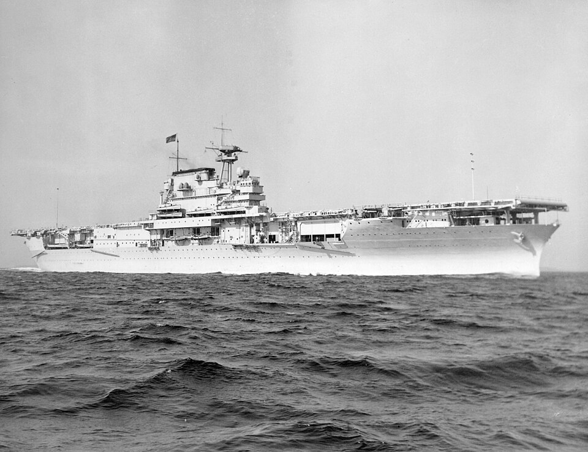

USS Yorktown (CV-5)
Portaviones de Estados Unidos, perteneciente a la clase Yorktown. Combatió en el mar del Coral y regresó rápidamente a operaciones para Midway tras reparaciones de emergencia.

Diseño y función
USS Yorktown (CV-5) pertenecía a la clase Yorktown. Portaviones de escuadra para operaciones en el Pacífico. Sus prestaciones se detallan en la tabla técnica, con las fechas o condiciones disponibles en la referencia.
Operaciones y trayectoria
Combatió en el mar del Coral y regresó rápidamente a operaciones para Midway tras reparaciones de emergencia. En Midway sufrió ataques aéreos y, mientras se intentaba salvarlo, un ataque submarino.
Destino final y conservación
Se hundió el 7 de junio de 1942. Esta ficha corresponde al CV-5 y no al posterior Yorktown CV-10, conservado como museo.